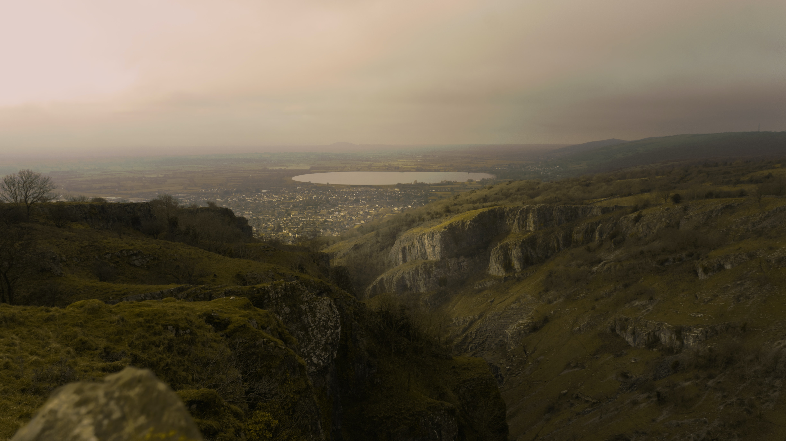

1 / 3

Caption Text
2 / 3

Caption Two
3 / 3

Caption Three
A trail is usually a path, track or unpaved lane or road. In the United Kingdom and the Republic of Ireland path or footpath is the preferred term for a walking trail. The term is also applied, in North America, to routes along rivers, and sometimes to highways.
Change image every 2 seconds: